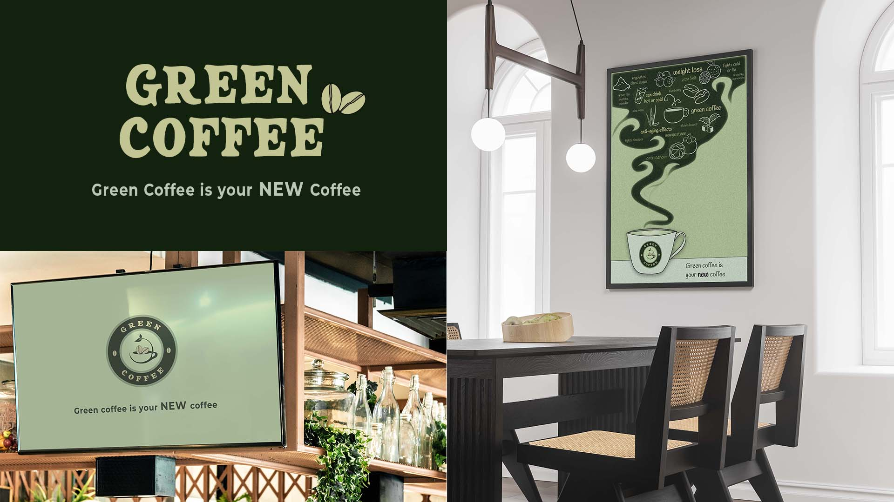

Nina Yllor Yabut
- Bachelor of Design
- Double Major in Media Design & Communication Design
biography
Hello! I am Nina Yllor Yabut and I will soon graduate with a Bachelor of Design majoring in Media Design and Communication Design. I have been passionate about creating things using my hands such as designing and The University of Waikato was the perfect place to strive and gain more experience to prepare myself working in the industry.
Design is a part of everything we do. Since I was young I’ve been loving drawing, painting, designing and being creative in general. As an adult, I still have the passion of being creative so I decided to study design and go for it. During my time at Waikato I found that my areas of interest are in the lines of branding, illustration and animation. Waikato has also helped me build more knowledge and experience about design, to be more creative. It’s not just designing but also expanding your thinking, growing ideas and finding solutions as well. I want to pursue my passion for branding, illustration and animations in my future career.
project description
People who are coffee lovers all know that roasted coffee has side effects such as coffee jitters,
heartburn, anxiety and other potential side effects and some people cannot drink coffee because of it.
Green Coffee is rich with chlorogenic acid. This chlorogenic acid has tons of health benefits such as
reducing high blood pressure, blood vessels and weight loss. Chlorogenic acid in green coffee is thought
to affect how the body handles blood sugar and metabolism. Many people might not know that before the
coffee is roasted, it is green coffee. Once roasted it loses its chlorogenic acid due to the roasting
process, so my project solution is to create a green coffee drink that will have an equivalent taste to
roasted coffee without the roasting process and adding different powerful ingredients that will enhance
the benefits of green coffee.
Green coffee is not actually known in New Zealand, so my project is about promoting ‘Green Coffee’ as an
alternative to roasted coffee by showing the health benefits of choosing this product.
Green Coffee

For more information contact us
Email: degreeshow@waikato.ac.nz
Faculty phone: 0800 924 528
Faculty information: cs.waikato.ac.nz